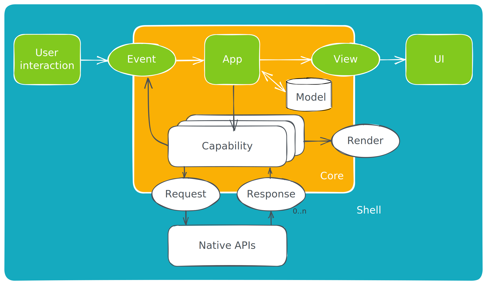

Elm Architecture
Now we've had a bit of a feel for what writing Crux apps is like, we'll add more context to the different components and the overall architecture of Crux apps. The architecture is heavily inspired by Elm, and if you'd like to compare, the Architecture page of their guide is an excellent starting point.
Event Sourcing as a model for UI
User Interface is fundamentally event-driven. Unlike batch or stream processing, all changes in apps with UI are driven by events happening in the outside world, most commonly the user interface itself – the user touching the screen, typing on a keyboard, executing a CLI command, etc. In response, the app changes what's shown on the screen, starts an interaction with the outside world, or both.
The Elm architecture is the simplest way of modeling this pattern in code. User interactions (along with other changes in the outside world, such as time passing) are represented by events, and in response to them, the app updates its internal state represented by a model. The link between them is a simple, pure function which takes the model and the event, and updates the model based on the events. The actual UI on screen is a direct projection of the model. Because there is virtually no other state in the app, the model must contain enough information to decide what should be on screen.
What we're missing is for the app to be able to respond to events from the outside world by changing the outside world. While the app can run computations and keep state, in this simplistic model, it can't read or write files, draw on screen, connect to APIs over the network, etc. It can't perform side-effects. Conceptually, we need to extend the update function to not only mutate the model, but also to emit some side-effects (or just "effects" for short).

TODO a better picture focusing on the update function
This more complete model is a function which takes an event and a model, and produces a new model and optionally some effects. This is still quite a simple and pure function, and is completely predictable, for the same inputs, it will always yield the same outputs, and that is a very important design choice.
UI, effects and testability
User interface and effects are normally where testing gets very difficult. If the application logic can directly cause changes in the outside world (or input/output — I/O, in computer parlance), the only way to verify the logic completely is to look at the result of those changes. The results, however, are pixels on screen, elements in the DOM, packets going over the network and other complex, difficult to inspect and often short-lived things. The only viable strategy (in this direct scenario) to test them is to take the role of the particular device the app is working with, and pretending to be that device – a practice known as mocking (or stubbing, or faking, depending who you talk to). The APIs used to interact with these things are really complicated though, and even if you emulate them well, tests based on this approach won't be stable against changes in that API. When the API changes, your code and your tests will both have to change, taking any confidence they gave you in the first place with them. What's more, they also differ across platforms. Now we have that problem twice or more times.
The problem is in how apps are normally written (when written in a direct, imperative style). When it comes time to perform an effect, the most straightforward code just performs it straight away. The solution, as usual, is to add indirection. What Crux does (inspired by Elm, Haskell and others) is separate the intent from the execution. Crux's effect approach focuses on capturing the intent of the effect, not the specific implementation of executing it. The intent is captured as data to benefit from type checking and from all the tools the language already provides for working with data. The business logic can stay pure, but express all the behaviour: state changes and effects. The intent is also the thing that needs to be tested. We can reasonably afford to trust that the authors of a HTTP client library, for example, have tested it and it does what it promises to do — all we need to check is that we're sending the right requests1.
Executing the effects: the runtime Shell
In Elm, the responsibility to execute the requested effects falls on the Elm runtime. Crux is very similar, except both the app and (some of) the runtime is your responsibility. This means some more work, but it also means you only bring what you need and nothing more, both in terms of supported platforms and the necessary APIs.
In Crux, business logic written in Rust is captured in the update function mentioned above and the other pieces that the function needs: events, model and effects, each represented by a type. This code forms a Core, which is portable, and really easily testable.
The execution of effects, including drawing the user interface, is done in a native Shell. Its job is to draw the appropriate UI on screen, translate user interactions into events to send to the Core, and when requested, perform effects and return their outcomes back to the Core.

The Shell thus has two sides: the driving side – the interactions causing events which push the Core to action, and the driven side, which services the Core's requests for side effects. Without being prompted by the Shell, the Core does nothing, it can't – with no other I/O, there are no other triggers which could cause the Core code to run. To the Shell, the Core is a simple library, providing some computation. From the perspective of the Core, the Shell is a platform the Core runs on.
Capabilities: the syntax sugar for effects
Effects encode potentially quite complex, but common interactions, so they are the perfect candidate for some improved ergonomics in the APIs. This is where Crux capabilities come in. They provide a nicer API for creating effects, and in the future, they will likely provide implementations of the effect execution for the various supported platforms. Capabilities can also implement more complex interactions with the outside world, such as chained network API calls or processing results of effects, like parsing JSON API responses.
We will look at how capabilities work, and will build our own in the next chapter.
In reality, we do need to check that at least one of our HTTP requests executes successfully, but once one does, it is very likely that so long as they are described correctly, all of them will.